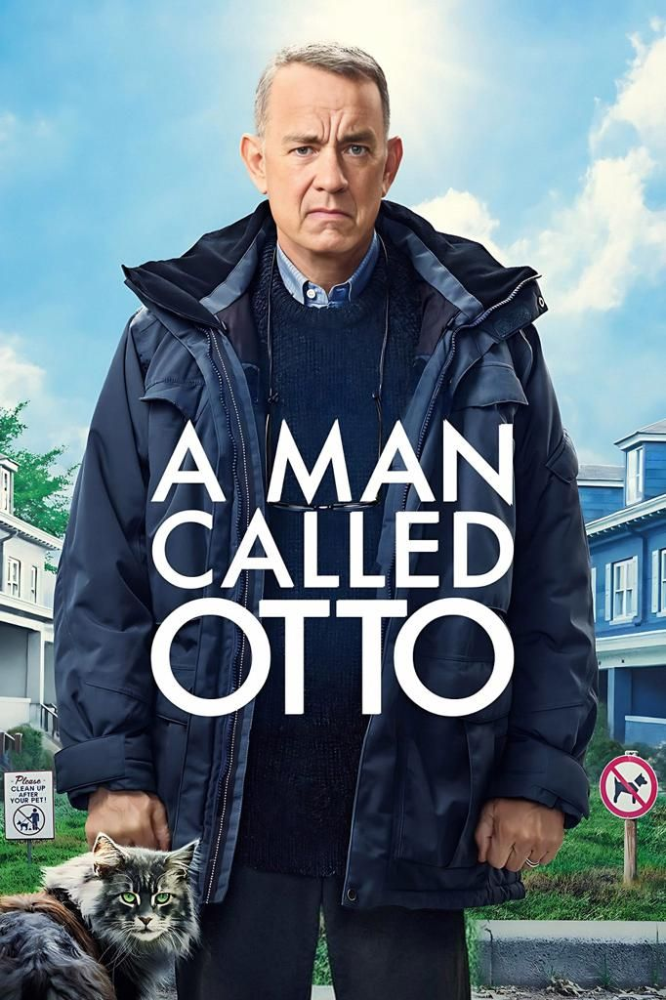

A Man Called Otto
-
Deskripsi Singkat: Film drama komedi tentang seorang pria tua yang pemarah dan kesepian, yang hidupnya berubah setelah bertemu tetangga baru yang penuh semangat.
-
Aktor Pemeran Utama: Tom Hanks, Mariana Treviño, Rachel Keller, Augustus Prew
-
Pengarang Cerita: David Magee & Fredrik Backman
Sutradara: Marc Forster
-
Rating:
-
Sinopsis: Otto adalah seorang duda tua yang pemarah dan hidupnya penuh rutinitas. Ia merasa dunia sudah meninggalkannya, dan kesepian menjadi teman sehari-harinya. Suatu hari, seorang keluarga baru pindah ke sebelah rumahnya. Kehadiran Marisol, seorang wanita muda yang hangat dan penuh energi, perlahan-lahan mulai mengubah hidup Otto.
Melalui interaksi dengan tetangga baru dan komunitas sekitarnya, Otto belajar kembali tentang arti persahabatan, kebaikan hati, dan bagaimana membuka diri terhadap orang lain. Dari mulai konflik kecil hingga momen haru yang mengubah perspektifnya, Otto akhirnya menemukan kembali makna hidupnya.